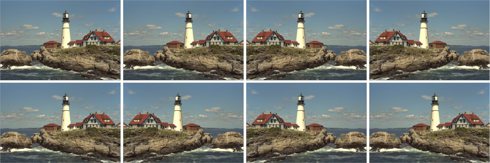

Transformations
Transformations are applied to items with apply(tfm, item). This page shows how to combine and randomize them and gives an overview of the available ones; the Gallery shows what the spatial transformations look like, and the API reference documents each in detail.
Composing transformations
Using transformations is easy. Simply compose them with |>:
tfm = Rotate(10) |> ScaleRatio((0.7,0.1,1.2)) |> FlipX{2}() |> Crop((128, 128))DataAugmentation.CroppedProjectiveTransform{DataAugmentation.ComposedProjectiveTransform{Tuple{Rotate{2, Type{Rotations.RotMatrix{2, Float64}}, Distributions.Uniform}, ScaleRatio{3}, FlipDim{2}}}, Tuple{Crop{2, DataAugmentation.FromOrigin}}}(DataAugmentation.ComposedProjectiveTransform{Tuple{Rotate{2, Type{Rotations.RotMatrix{2, Float64}}, Distributions.Uniform}, ScaleRatio{3}, FlipDim{2}}}((Rotate{2, Type{Rotations.RotMatrix{2, Float64}}, Distributions.Uniform}(Uniform(-10.0, 10.0)), ScaleRatio{3}((0.7, 0.1, 1.2)), FlipDim{2}(2))), (Crop{2, DataAugmentation.FromOrigin}((128, 128), DataAugmentation.FromOrigin()),))Projective transformations are fused into a single, more efficient transformation; the rest are applied one after the other.
Affine transformations
Affine transformations are a kind of projective transformation that can be composed very efficiently. They apply to Images and the keypoint-based items alike, in 2 and 3 dimensions.
FlipX,FlipYandFlipZflip the data along an axis, for exampleFlipX{2}()for 2D data;FlipDim{N}(dim)flips along any dimension.Reflect(γ)reflects 2D data around its center by an angle chosen uniformly from[-γ, γ]degrees.Rotate(γ)rotates 2D data around its center by an angle chosen uniformly from[-γ, γ]degrees;Rotate(α, β, γ)rotates 3D data, andRotateX,RotateYandRotateZrotate around a single axis.ScaleRatio(ratios)scales the sides by the given ratios,ScaleFixed(sizes)scales them to the given sizes disregarding the aspect ratio, andScaleKeepAspect(minlengths)scales so that the sides are at leastminlengths, keeping the aspect ratio.Zoom(scales)zooms in by a factor chosen from the intervalscales.WarpAffine(σ)randomly moves three corners of the item, which is similar to a random translation, shear and rotation.
Crops
To get a cropped result, simply compose any projective transformation with a crop:
CenterCrop(sz)andRandomCrop(sz)crop a region of sizeszfrom the center or from a random location. They are special cases ofCrop(sz, from).CenterResizeCrop(sz)andRandomResizeCrop(sz)first scale the item withScaleKeepAspectand then crop it from the center or from a random location, so that images of any size end up with the same sizesz. The result is moved to the origin withPinOrigin().ResizePadDivisible(sz, by)scales the item withScaleKeepAspectand pads it so that its side lengths are divisible byby.
Color transformations
AdjustBrightness(δ)multiplies the color channels of an image by a factor chosen uniformly from[1-δ, 1+δ].AdjustContrast(factor)adjusts the contrast of an image by a factor chosen uniformly from[1-factor, 1+factor].
Stochastic transformations
When augmenting data, it is often useful to apply a transformation only with some probability or choose from a set of transformations. Unlike in other data augmentation libraries like albumentations, in DataAugmentation.jl you can use wrapper transformations for this functionality.
Maybe(tfm, p = 0.5)applies a transformation with probabilityp; andOneOf([tfm1, tfm2])randomly selects a transformation to apply.
Let's say we have an image classification dataset. For most datasets, horizontally flipping the image does not change the label: a flipped image of a cat still shows a cat. So let's flip every image horizontally half of the time to improve the generalization of the model we might be training.
item = Image(testimage("lighthouse"))
tfm = Maybe(FlipX{2}())
titems = [apply(tfm, item) for _ in 1:8]
showgrid(titems; ncol = 4, npad = 16)
Other transformations
Preprocessing covers the transformations that get data ready to be put into a model, such as normalization and one-hot encoding. Buffered wraps any transformation to reuse its output buffers; see Buffering.